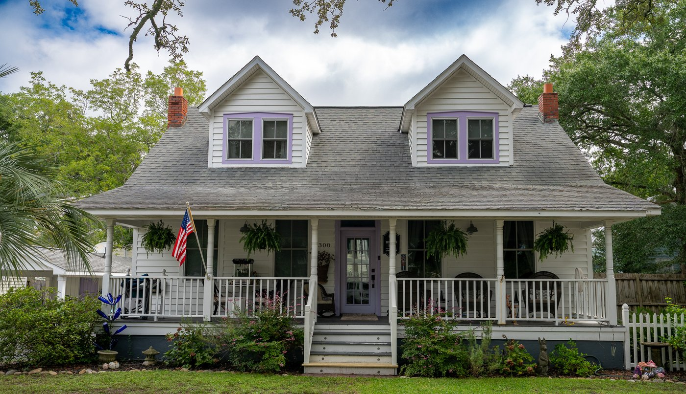

The History of 308 Dry Street – Bell-Fulcher-Lewis House

This property was purchased in 2018 by the current owners Robert and Mira Palmeter. In 2024 they embarked on a renovation of their front living area and turned it into a “speakeasy.” The room has been adorned with period furniture, drapes, and décor.
The ironic placement of a home with a speakeasy on Dry Street is not lost on us. Dry Street is actually named after William Dry, a prominent local planter and the customs collector for the Port of Brunswick. He lived in Brunswick town in the former royal governors’ palace, known as Bellfont, until it was burned by restless British troops on March 12,1776. His daughter and heiress, Sarah Dry, was married to Benjamin Smith, one of Smithville’s town fathers. He is buried in the St Phillips churchyard. Cenotaphs commemorating Benjamin and Sarah Smith are in the Old Smithville Burying Ground in Southport.
Southport likes to boast about its famous street names: LORD, HOWE, DRY & I AM. These are often interpreted as a humorous reference to the Prohibition Era, which was a topic of interest in the once dry city of Southport. William Epstein Lord and Robert Howe are founding fathers. The town alderman gave the alley “I AM” its name it the 1950s. Quite a good practical joke that remains today.
Mrs. Hester Ann Bell: Dry Street 1879- 1902
The lot at 308 Dry Street was sold for $25, by Lewis & Sarah Jones in 1879 to their daughter, Hester Ann Bell. Lewis Jones was Mayor of Smithville in 1881. The house was then built for Hester in the late 1800’s on this large lot that extends from Dry Street to College Street. The house was possibly a wedding present from her parents. Hester’s husband, Ottaway S. Bell, was a confederate veteran.
In March of 1902, the heirs of Hester Ann Bell sold the property for $500 to Price Furpless. Furpless, a local architect and carpenter, probably made substantial changes to the house while he owned the home. Furpless was mayor of Southport in 1911 and he is also known for building the AMUZU theater in Southport in 1913. Furpless sold the home to D.W. Fulcher in July of 1902 for $600. Price Furpless is interred in the Old Smithville Burying Ground.
David West Fulcher: Dry Street 1902-1915
David West Fulcher was appointed the new jailer of the county jail in Southport in September of 1910 (now a museum). David and wife Mary, sold the Dry Street property in February, 1915 to A.T. McKeithan for $1000. Fulcher then passed away in 1938, in his home in Southport. He was a retired member of the US Coast Guard. He is also interred in the Old Smithville Burying Ground.
McKeithan was the clerk of superior court in Brunswick County. McKeithan sold the home in June of 1915, to J.J. Loughlin for $100 and “other valuable considerations.”
J.J. Loughlin and family previously occupied the Southport Baptist church’s first parsonage, completed in 1906. (Southport Baptist chapel is also on the 2025 Holiday Home Tour) J.J. and his family also resided in the Brunswick County jail for several years.
T.K. Lewis: Dry Street 1919-1946
J.J. Loughlin passed the house to T.K. Lewis in July of 1919. It appears that J. J. owed some money and this settled a debt. The price paid was $862. T.K. Lewis and wife Laura conveyed the property to their son Joe Lewis, in January of 1946.